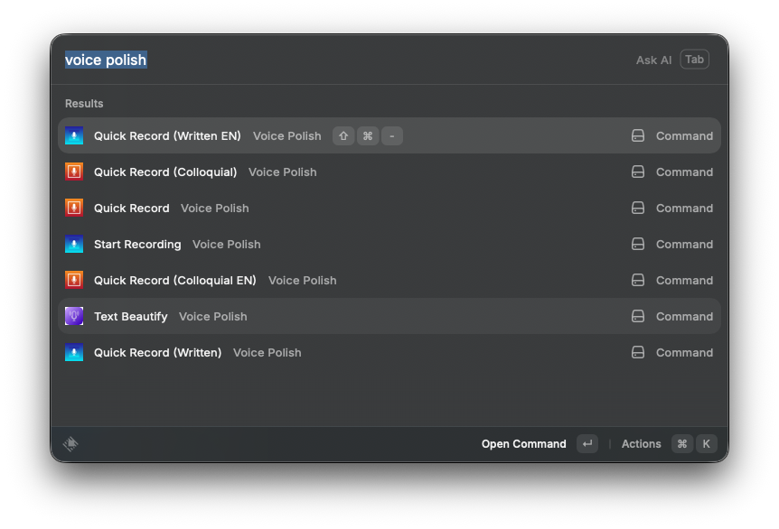
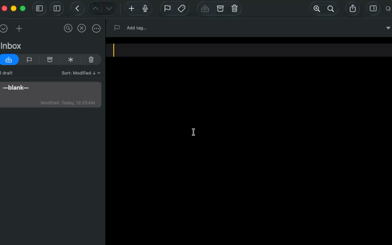
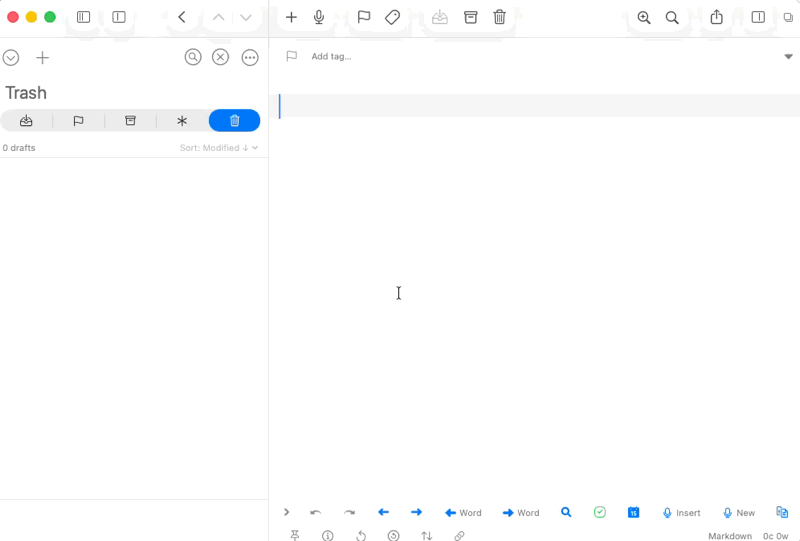
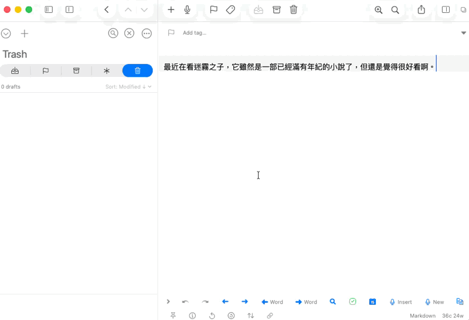
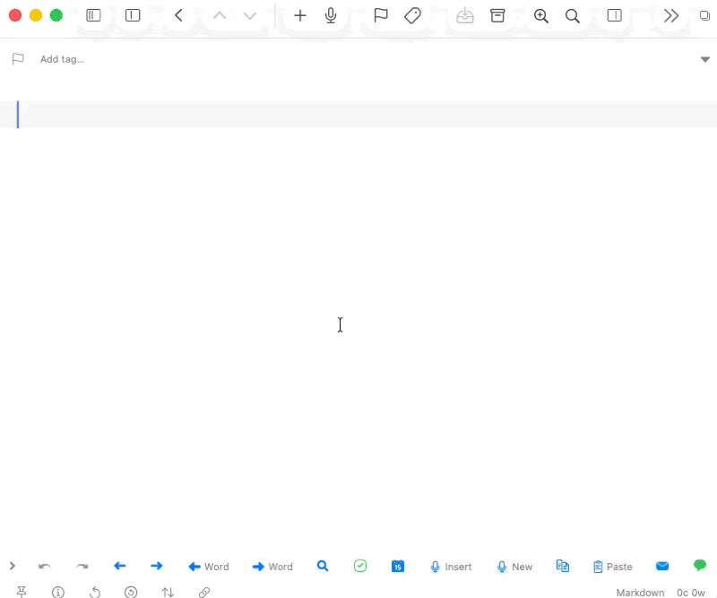
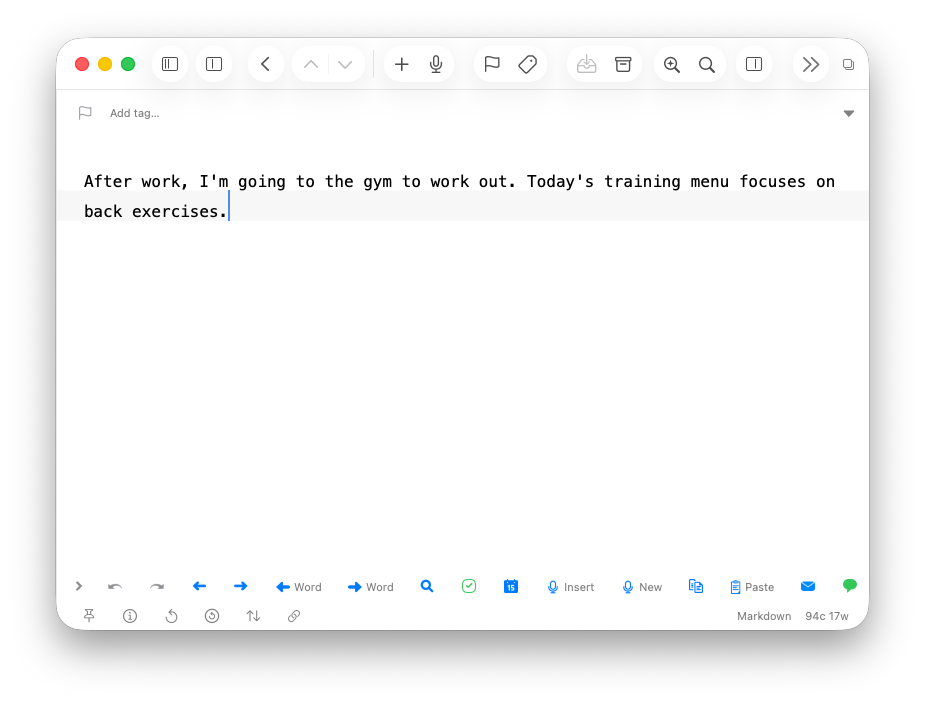
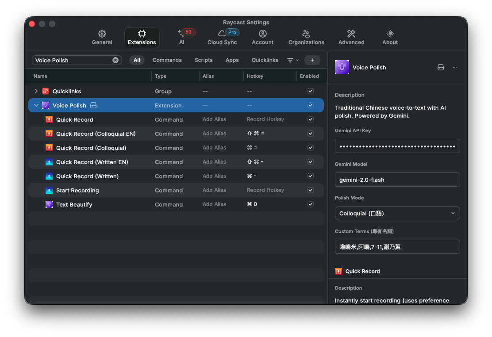
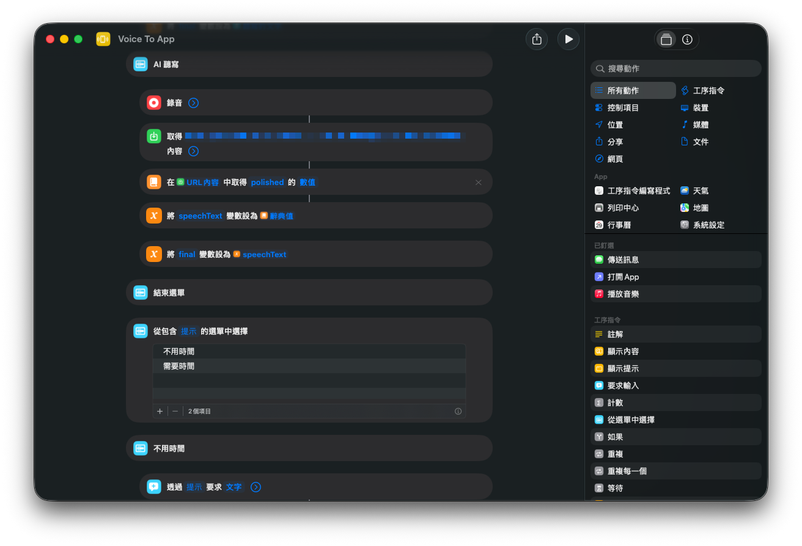
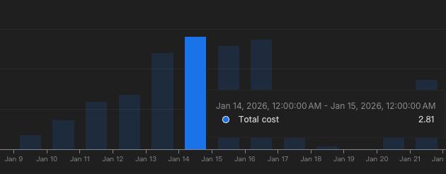

我只想打嘴砲！如何用 Vibe Coding 解放雙手！打造語音轉文字小幫手 Voice Polish！

如果你跟我一樣，覺得打字是全世界最累的事情，那你這篇一定要看到最後！🤝
前情提要
我是個懶人，能作就不要站、能動口就不動手（對，我就只是想打嘴砲 XD）
身為工程師，上班總是會需要大量的用文字訊息溝通（例如：跟 PM 吵架 XD）或者是撰寫文件。
即使我打字速度已經算蠻快的，一整天下來要花在打字上的時間，還是十分可觀 …（艸
因為我主要的工作是以使用 Mac 為主，我試過 Mac 內建的語音輸入。
光中文的語音就有點抓不太準，而且工程師的日常中，常常需要用到英文的專業術語，像是「請幫我 review 一下這個 PR」、「這個 issue 需要 hotfix」這種「中英文夾雜 a.k.a 晶晶體」的句子。
結果 Mac 的語音輸入不是把英文聽成火星文，就是整句話斷得亂七八糟，於是我還是只能自己慢慢用鍵盤打字了 Orz
因此，我心裡一直期望著：
如果有一個工具，可以讓我「用講的」，不管是中文還是英文，都能準確轉成文字，那該有多好！
最近也有看到不少的，例如像 Wispr Flow 或者是 typeless。
但身為工程師，自己又考量到，如果語音輸入有些太私密的話，就會跑到別人那邊去，感到有點資安的疑慮。
剛好最近 Vibe Coding 很紅，我就想說用這個當主題自己來做一個玩玩看 XD
開發歷程
第一版：Google AI Studio
一開始我使用 Google AI Studio 快速生出了一個基本版本。
想法簡單暴力：
把錄音丟給 Gemini API，讓它幫我轉成文字。
但做完之後發現一個大問題——如果要上架成純前端的網頁，Gemini APIKey 就會直接曝露在瀏覽器裡面！
打美得司(翻譯年糕：不行阿) XDD
第二版：前後端分離
考慮到安全性，我用 Antigravity IDE 把專案改成前後端分離的模式：
- 前端主要負責錄音、讓我複製文字
- 後端負責呼叫 Gemini API (Golang)
這樣 Gemini API Key 就安全地藏在後端了！✅
關於一點點後端的 Murmur
一開始 Antigravity 幫我用 Golang 原生的 HTTP，但自己還是比較看習慣用 Gin 的方式，所以就請他調整成 Gin 的框架。
另外原本的寫法的 Prompt 也散落在不同的檔案裡面，因此請它幫我用了一個 Prompt Builder 方便統一管理。但因為目前的 Prompt 沒有很多，還不需要拆成各自任務的 Prompt，到時候有需要再拆吧～
由於考量到只有我自己使用，因此預設建立了一套簡易的使用者登入系統，以確保系統上線後僅有我個人能夠存取。
順便讓 Antigravity 撰寫 api 與 unit test cases，驗證功能是否正確。
阿，對了！這次是部署在 Railway 這個平台（一個月要 5 美金）
就這樣用了一陣子 …
本來想說可以過著幸福快樂的日子了。
只是好景不長 ——
做完之後我發現 …
每次要用這個功能，我還是得打開瀏覽器、開啟網頁、點錄音按鈕 … 還是覺得 … 很麻煩（對！我就爛）
第三版：Raycast Extension 🎉
後來我想到，自己一直都是 Raycast 的愛用者，如果能把這個功能直接整合到 Raycast 裡面，那不就超方便的嗎！
於是我用 Antigravity 幫我把前面的程式碼改寫成 Raycast Extension，並且在 Raycast 的設定裡面填入 Gemini API Key。
因為是自己的 Gemini APIKey 放在 Raycast 裡，而且是 code 是自己弄的（底下有程式碼開源 repo），所以不用擔心語音檔被上傳到不明伺服器啦（至少我信得過 Google XD）～
現在只要在游標的情況下，按下 Raycast 快捷鍵開啟指令，就能開始講話。講完按 Enter，文字就直接出現在游標的位置！
(((撒花 ~🎉 🎉 🎉 🎉 🎉 🎉)))
基本操作流程
🎙️ → 🤖 → ✨ 說話、等待、文字自動出現 🎉
| 步驟 | 說明 |
|---|---|
| 1 | 在任何輸入框，按下 Raycast 快捷鍵 |
| 2 | 開始講話（中文、混搭都可以！） |
| 3 | 按下 Enter 結束錄音 |
| 4 | 文字自動貼到游標位置 ✨ |
指令介紹
註：以下 demo 前面在計時的部分是我正在說話的時間 XD
口語模式
為盡可能貼近使用者（也就是我本人 XD），說話的方式，只是把我講話的一些贅字，或者是詞語等等的修飾掉。
我說的內容是：「要做完 data migration 之後，才能上 production。」

書面模式
請將我所說的話稍作整理，使其能應用於文件上（⬅︎ 這段就是用書面模式輸出的 XD）
我說的內容是：「現在來測試一下語音模式，看能不能整理我現在所說的東西。」

潤飾模式
針對已經產生的文字，希望加以潤飾以下，就可以把這些文字圈選起來，用潤飾模式整理一下

中文翻譯成口語英文模式
身為工程師，文件大部分都是用寫英文撰寫，所以就在這個基礎上，加上讓我可以直接講中文，便直接輸出成英文的功能。
我說的內容是：「今天的任務是開發三支 API，並且要跟 client 端討論 API 串接相關的細節。」

中文翻譯成書寫英文模式
我說的內容是：「下班要去健身房，今天的訓練菜單是練背。」

Raycast 設定
在 Raycast 的 Extension 設定頁面，你可以設定：
| 設定項目 | 說明 |
|---|---|
| Gemini API Key | 你的 Gemini API 金鑰 |
| Gemini Model | Google 提供的可選 Gemini 模型（我目前測起來覺得 Gemini-2.0-Flash 算是比較 CP 的選項，等一下會再提到費用的部分） |
| Polish Mode | 分成有口語跟書面模式 |
| Custom Terms | 因為我們家的狗叫嚕嚕米，然後我們也蠻常吃涮乃葉的，對於特殊名詞常常還是抓錯字，就可以在這邊設定 |

上述的 Raycast 使用情境都是在 Mac 上使用。
iPhone 捷徑整合
在 iPhone 手機端的話，因為開發 iOS 的 App 成本太高了，所以只好用 iPhone 的捷徑打 api 來處理，就一樣可以用講的得到文字了。

關於費用
因為會需要用 Gemini API，因此還是會有被計價的部分。
不過自己這樣子試了下來，把它用在工作跟日常的生活上，平均大概是 1 塊到 3 塊台幣 之間。
這樣一個月大概花 90 塊左右，不到 100 塊可以讓我省下這麼多打字的功夫跟時間，感覺是蠻划算的欸！

限制
雖然這個工具看起來十分好用，但它依然有不少限制。首先：
- 你需要有一台 Mac。
- 剛好有在使用 Raycast。
- 電腦要有網路，因為它會去打 Gemini 的 API。
- 它平均 API 的時間可能要等待 2 到 3 秒，所以要有點耐性 XD
- 你所在的場所剛好可以講話（在圖書館的自修室應該就不太可能了 XD）
- 轉出來的文字大部分正確，不過有時候還是得要手動調整。
下載
如果你剛好符合上述，又剛好有點興趣。歡迎來這邊玩玩看:
👉 點我前往 GitHub 下載 Raycast Voice Polish
後記
從一月開始嘗試到現在，總算把這個小專案告一個段落了！😭😭😭
本來只是抱持著「如果這樣會不會很有趣的心態」來玩玩看 Vibe Coding ，結果還真的能解決自己生活中的問題。
從一開始的純前端版本，到前後端分離，再到最後的 Raycast Extension。不過都不是一開始就規劃好的，每一步都是邊做到一半才突然有：「還是可以這樣 … 」的念頭
另外，這也讓我見識到 vibe coding 的效率。如果從頭到尾都要自己手 key 的話，我想可能兩三個月跑不掉吧，畢竟我沒有花很多時間在上面。
不過 Vibe Coding 也不是閉著眼睛什麼都不用管。AI 生出來的 code 還是會有一些問題，像是 API 的參數格式跟最新的文件對不上、或者是錯誤處理沒有寫好，更多時候它會自己鬼打牆 QQ… 這時候就需要自己看一下，然後再跟 AI 說：「這邊報錯了，錯誤訊息是 xxx，幫我修一下」，幾個來回通常就能搞定。有時候則是看了就發現它的寫法不是很滿意，只好再請它用某個 Design Pattern 處理。
我覺得 Vibe Coding 比較像是自己當 PM 許願功能，AI 當工程師。我負責決定許願的內容和驗收，AI 負責實作。但身為工程師有個好處就是，可以看得懂它寫了什麼，不然出問題的時候會不知道從哪裡開始 debug XDD
雖然可以改的還是很多，但目前這樣就已經有滿足到自己日常工作大部分的需求了。
而且也只有自己一個使用者，也用得很開心，好像也沒有必要特別上架到 Raycast 的官方 store 上（對，我就懶）
有了它之後，現在每天工作的時候，只要按一下快捷鍵就能用講的輸入文字，真的是太爽了！！🎉
這篇文章紀錄成分居多，如果你居然有看到這裡的話，真的是十分感謝！！！
若文章的內容有錯誤的地方，也歡迎隨時一起討論交流。😘
最後感謝你的閱讀囉，我們下次見！Bye ～